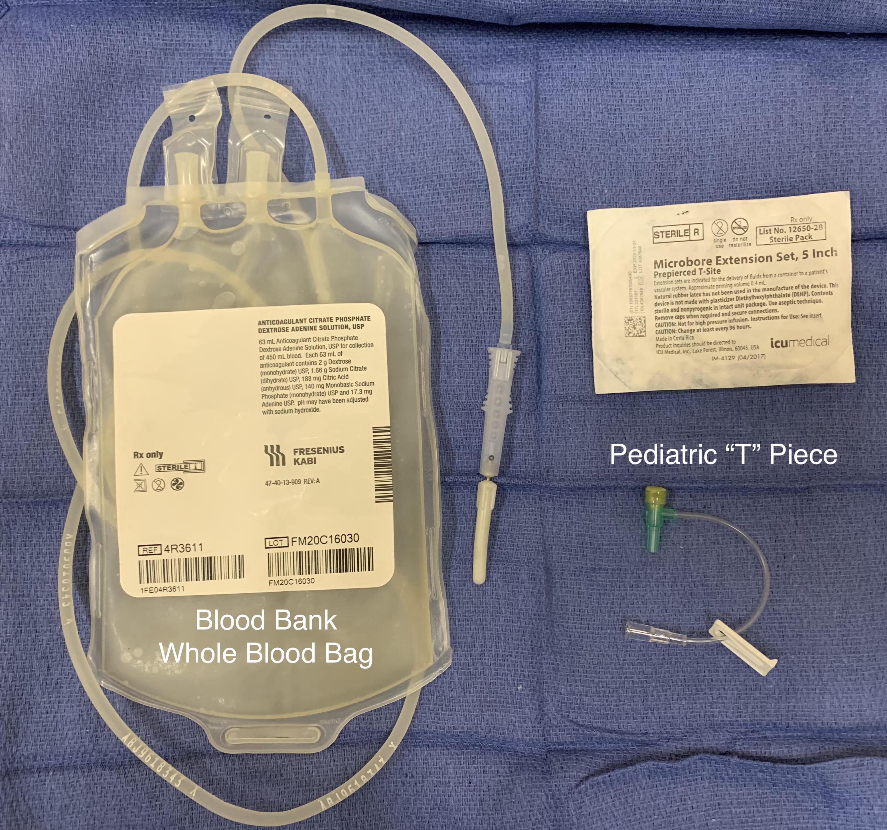
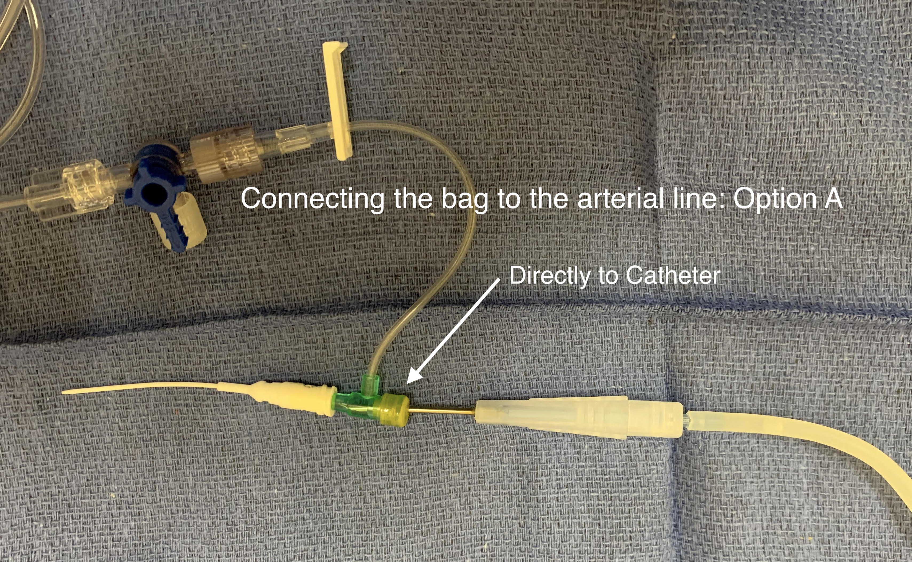
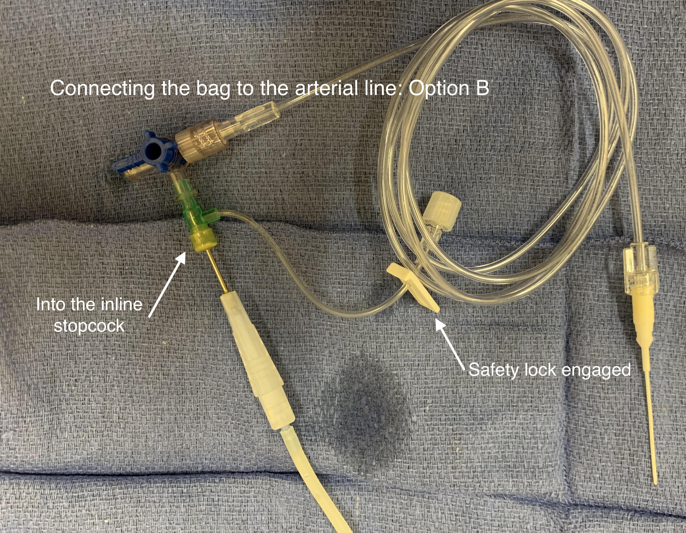

Hemodilution
- Calculate Acceptable Blood Loss
- Prepare RBC bags from blood bank x2 (ask anesthesia tech)
- Withdraw blood from arterial line as shown (either option A or B)
- Replace volume with fluid of choice
- Colloid 1:1 ratio, crystalloids 1:3 ratio
- Label, time, and store blood at anesthesia station


